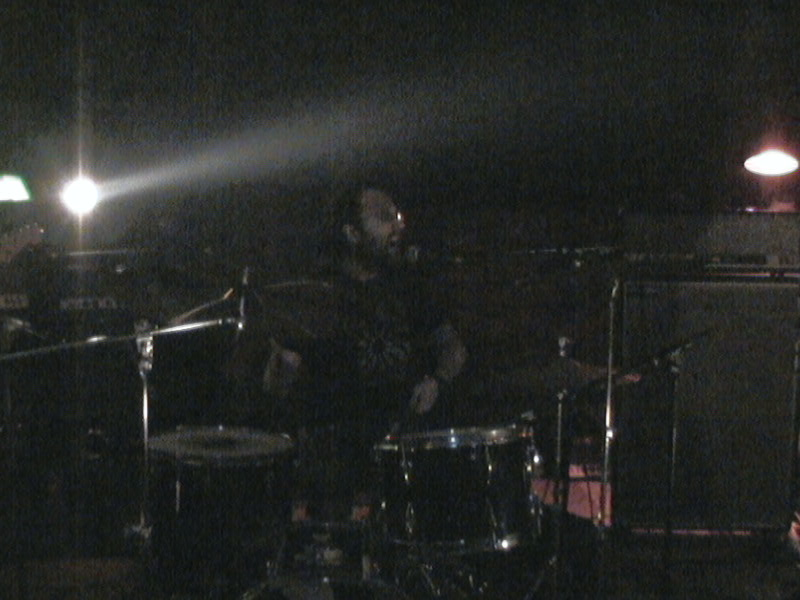

| < vorige | Terug naar overzicht |
Festyvo Art/music festival in Atelier The Youman Den Haag / 2004
Festyvo#33 15 april 2007 Art/Music fest: Art-acts door The Youman, CxC, Omerta, Refunc en Flo en met muziekoptredens van Foot Foot, Organisms, Mono, Fine China Superbone, Feverdream, Stöma, en Gonebald
Attacco Festyvo#2 23 oktober 2005 muziekfestival met optredens van Johnny Rook, Idrive a UFO, Peal, Hallo Venray, Fine China Superbone en Orange Sunshine
Chez Yvo #1 21 maart 2004 muziekfestival met optredens van Johnny Rook, Peal, The Solo Men Only, Black Deal, Incense, The Leaves en Spider Rico
Foto: Orange Sunshine
www.baracca.nl >
